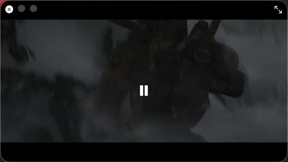

נגן IPTV מקורי ל-Mac.
מקורות Xtream Codes ו-M3U, חיפוש מיידי, תמונה בתוך תמונה, צפייה בהיסטוריה והורדות. חינם ובקוד פתוח, בלי חשבון.
התקנה בשורה אחת. מדביקים בטרמינל. macOS לא מציגה אזהרה, ואחר כך האפליקציה מתעדכנת לבד.
curl -fsSL https://raw.githubusercontent.com/Goelir/IPTVMac/main/install.sh | bash

ראו איך זה עובד
סיור של 80 שניות: ערוצים, חיפוש, מועדפים, הנגן, מהירות כפולה, תמונה בתוך תמונה והורדות. הערוצים והכרזות בדויים לצורך ההדגמה; הקטע המנוגן הוא הסרט Sintel של Blender Foundation.
למה IPTVMac
מהיר
הספרייה שלכם נשמרת במסד SQLite מקומי עם חיפוש טקסט מלא. הקלדה מוצאת ערוץ מתוך 100,000 פריטים בפחות משנייה.
יציב
הניגון רץ על mpv שמובנה באפליקציה. הוא מנגן סטרימים פגומים שנגני מערכת נתקעים בהם, ומתחבר מחדש כשהסטרים נופל.
מקורי
SwiftUI, בלי Electron ובלי web view. אין מה להתקין בנוסף: הנגן נמצא בתוך האפליקציה.
פתוח
GPL-3.0, בלי חשבונות ובלי אנליטיקס. האפליקציה פונה רק לשרתים שהוספתם, ול-GitHub לעדכונים.
מה מקבלים
חיפוש שעומד בקצב של 100,000 פריטים
מקלידים ומחפשים בתוך קטגוריה, בתוך חלק או בכל מקום. התוצאות מופיעות תוך כדי הקלדה ומקובצות לערוצים, סרטים וסדרות.

נגן שמתמודד עם סטרימים בעייתיים
מבוסס על mpv. הוא מנגן סטרימים פגומים שנגני מערכת מוותרים עליהם, מתחבר מחדש כשהסטרים נופל, ומסתיר את הבקרים כדי שהתמונה תמלא את המסך.

ממשיכים לצפות ומחפשים הלאה
חלון צף של תמונה בתוך תמונה נשאר מעל הכול, בכל שולחן עבודה. בוחרים ערוץ או סרט אחר, והסרט ממשיך לרוץ.

שומרים סרטים ועונות שלמות
מורידים סרטים ופרקים, ובסדרות Xtream גם עונה שלמה, לתיקייה שבחרתם. מנגנים ממסך ההורדות.

כתוביות ואודיו
רצועות מובנות, קבצי srt ו-ass בתפריט או בגרירה, גודל והזזה, שפות מועדפות.
צפייה בהיסטוריה ולוח שידורים
צפייה בתוכניות מהעבר בערוצים שתומכים, ומה משודר עכשיו ואחר כך.
הפרק הבא
כשפרק נגמר, הפרק הבא מתחיל אחרי ספירה של 5 שניות. אפשר לבטל.
מועדפים והמשך צפייה
מסמנים ערוצים וסרטים בכוכב. סרטים ופרקים ממשיכים מהמקום שעצרתם.
כמה רשימות
עוברים בין רשימות מסרגל הכלים, או בוחרים All playlists כדי לחפש ולעיין בכולן יחד, עם שם הרשימה על כל פריט.
מהירות, דילוג וטיימר שינה
ניגון מ-0.25× עד 4×, בחירת צעד הדילוג, וטיימר שינה.
גיבוי והגדרות
ייצוא של הרשימות (בלי סיסמאות), המועדפים וההיסטוריה; מראה בהיר או כהה; הסתרת קטגוריות לפי מילים.
מתעדכן לבד
בודק את GitHub Releases, מאמת את חתימת הגרסה ואת ה-SHA-256, ומתקין את הגרסה החדשה.
31 שפות ממשק
האפליקציה פועלת בשפת ה-Mac שלכם, או שבוחרים שפה בהגדרות. עברית, ערבית, פרסית ואורדו מקבלות פריסה מימין לשמאל.
מלבד עברית, אנגלית וערבית, התרגומים נכתבו בעזרת AI ועדיין לא נבדקו על ידי דובר שפת אם. תיקונים יתקבלו בברכה. איך לתרום תרגום (באנגלית)
- עברית
- English
- العربية
- Español
- Français
- Deutsch
- Português
- Italiano
- Русский
- Українська
- Polski
- Română
- Български
- Nederlands
- Svenska
- Čeština
- Magyar
- Ελληνικά
- Shqip
- Türkçe
- فارسی
- اردو
- हिन्दी
- বাংলা
- Bahasa Indonesia
- Tiếng Việt
- ไทย
- 简体中文
- 繁體中文
- 日本語
- 한국어
התקנה בשורה אחת
מדביקים בטרמינל. השורה מורידה את הגרסה האחרונה, בודקת SHA-256, מעתיקה את IPTVMac ל-Applications ופותחת אותה.
curl -fsSL https://raw.githubusercontent.com/Goelir/IPTVMac/main/install.sh | bashלמה פקודה? IPTVMac לא עברה אימות (notarization) של Apple, שדורש חשבון מפתחים בתשלום, ו-macOS חוסמת אפליקציות שהדפדפן סימן כ״הורדו מהאינטרנט״. קובץ שמורידים עם curl לא מסומן, ולכן אין מה לעקוף. הסקריפט קצר וגלוי: install.sh.
או הורדת ה-DMG
- פותחים את IPTVMac.dmg וגוררים את האפליקציה על אייקון Applications.
- ההפעלה הראשונה נחסמת: בהגדרות המערכת, פרטיות ואבטחה, לוחצים Open Anyway ליד IPTVMac.
- או מריצים בטרמינל xattr -dr com.apple.quarantine /Applications/IPTVMac.app
שאלות נפוצות
מה זה IPTVMac?
IPTVMac הוא נגן IPTV חינמי בקוד פתוח ל-Mac. הוא מנגן מקורות Xtream Codes ו-M3U עם נגן mpv מובנה, חיפוש מיידי, כתוביות, תמונה בתוך תמונה, צפייה בהיסטוריה, הורדות וממשק ב-31 שפות.
האם IPTVMac כולל ערוצים או מנוי?
לא. IPTVMac הוא נגן בלבד. הוא לא כולל, לא מארח ולא מקשר לערוצים, סרטים או סדרות. מוסיפים מקור מספק שמותר לכם להשתמש בו.
האם זה עובד עם Xtream Codes ו-M3U?
כן. ב-Xtream Codes מזינים כתובת שרת, שם משתמש וסיסמה מהספק. ב-M3U מזינים שם וקישור לרשימה.
אילו מחשבי Mac נתמכים?
מחשבי Mac עם Apple Silicon (M1 ומעלה) ו-macOS 14 ומעלה. מחשבי Intel לא נתמכים.
האם IPTVMac חינמי?
כן. הוא חינמי ובקוד פתוח ברישיון GPL-3.0, בלי פרסומות ובלי מעקב.
למה macOS חוסמת את האפליקציה, ואיך פותחים אותה?
IPTVMac לא עברה אימות של Apple, שדורש חשבון מפתחים בתשלום. מתקינים בפקודה שלמעלה, שמונעת את האזהרה, או פותחים הגדרות מערכת, פרטיות ואבטחה, ובוחרים Open Anyway.
האם יש תמונה בתוך תמונה?
כן. חלון צף נשאר מעל אפליקציות אחרות ובכל שולחן עבודה בזמן שמחפשים משהו אחר.
אפשר לצפות בתוכניות מהעבר?
כן, בערוצים שהספק תומך בהם. בוחרים תוכנית מלוח השידורים.
האם זה בטוח?
קוד המקור פומבי. העדכונים מגיעים מ-GitHub Releases ונבדקים מול SHA-256. סיסמאות החשבונות נשמרות במסד הנתונים המקומי של האפליקציה, נגיש רק למשתמש שלכם.
נגני IPTV אחרים ל-Mac
IPTVMac הוא ל-Mac בלבד. אם אתם צריכים משהו אחר:
- IPTVnator חינמי ובקוד פתוח ופועל גם ב-Windows וב-Linux.
- VLC יכול לפתוח רשימת M3U ישירות.
- ל-IPTV Smarters Pro יש אפליקציית שולחן עבודה ל-macOS.